Space facts are always interesting to learn!
As time goes by, technological advancements have seen us learn more facts about space in
the past
century than in all time before that.
We’ve literally searched the universe for the most amazing space facts, including facts about the
planets in our solar system, moons, the Milky Way, and beyond! We’re pretty sure #15 will make
you smile!
Before you begin your journey through time & space, check out our video below with our 5 favorite
space facts from this list!
Without further ado, let’s launch right into these 15 crazy facts about space!
Mercury & Venus are the only 2 planets in
our solar system that have no
moons.
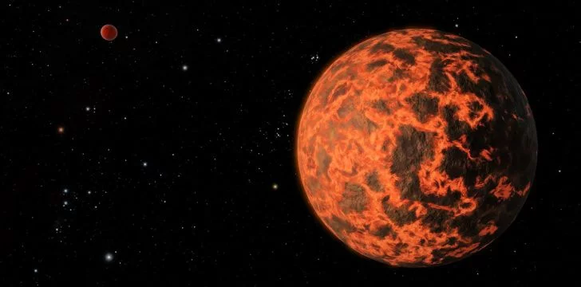
In total, there are 176 confirmed moons that orbit the planets in our solar system, with
some
of
them being bigger than Mercury itself!
If a star passes too close to a black hole, it can
be torn apart.
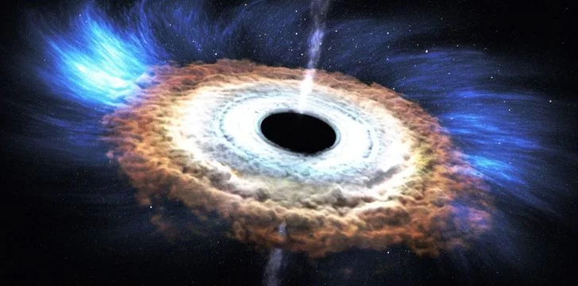
For 20 years, a team of astronomers observed a star at the center of our galaxy
orbiting a black
hole.
The star has now got close enough to the black hole for “gravitational redshift” to occur
which is
where the star’s light loses energy as the black hole’s gravity intensified.
The hottest planet in our solar system is Venus.
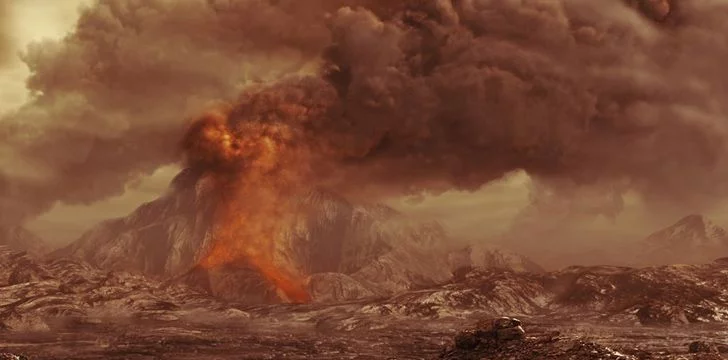Most people think that this would be Mercury, as it is the closest planet to the sun.
However, Venus has a lot of gasses in its atmosphere which creates a “Greenhouse Effect”
that causes a
constant
temperature of 864° Fahrenheit (462° Celsius) everywhere on
the plant’s surface.
Our solar system is 4.57 billion years old.
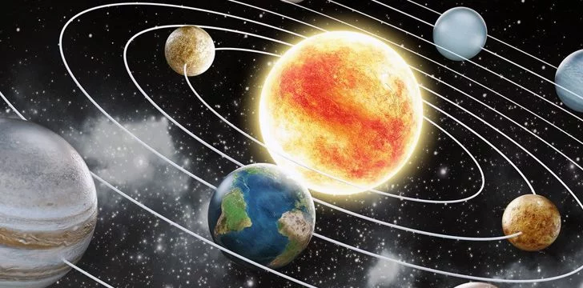Well, give or take 30 million years(ish). Accurately speaking, it is 4.571 billion years old.
Scientists estimate that in about 5 billion years, our Sun will expand becoming a Red Giant.
In about 7.5 billion years its expanding surface will swallow up and engulf the Earth.
Enceladus, one of Saturn’s smaller moons, reflects
90% of the Sun’s light.
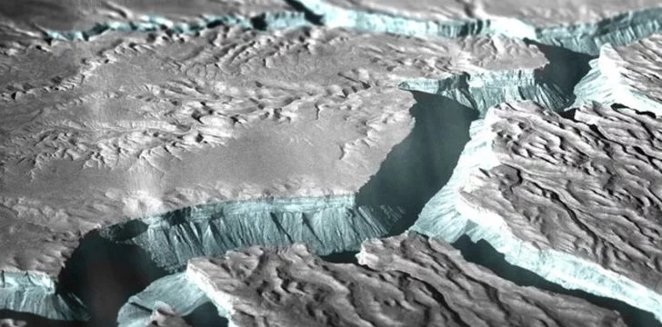
Because Enceladus’ icy surface reflects sunlight rather than absorbing it, temperatures
reach as low as
-394°
Fahrenheit (-201° Celsius).
The highest mountain discovered is the Olympus
Mons, which is located on Mars.
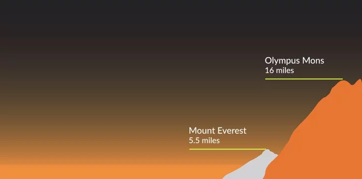
Its peak is 16 miles (25 km) high, making it nearly 3 times higher than Mount Everest.
And not only is it tall, but it’s also 374,015 ft² (114,000 m²) wide – that’s an area the size
of Arizona!
The Whirlpool Galaxy (M51) was the first celestial
object identified as being spiral.
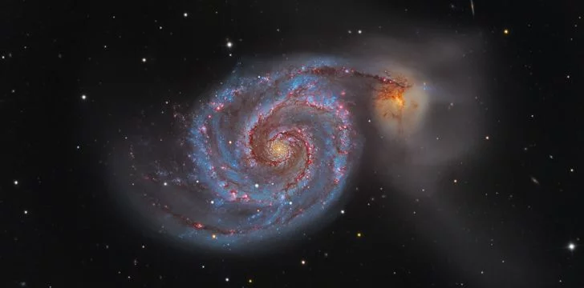
The grand, spiraling arms of the Whirlpool Galaxy are made up of long lanes of stars
and gas, sprinkled
with
lots of space dust.
These arms act as star formation factories, compressing hydrogen gas and creating
clusters of new stars.
A light-year is the distance covered by light in a
single year.
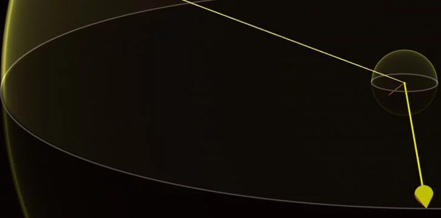
Light moves at the velocity of about 186,411 miles (300,000 km) a second.
So one light-year equates to roughly 5,903,026,326,255 miles!
The Milky Way galaxy is 105,700 light-years wide.
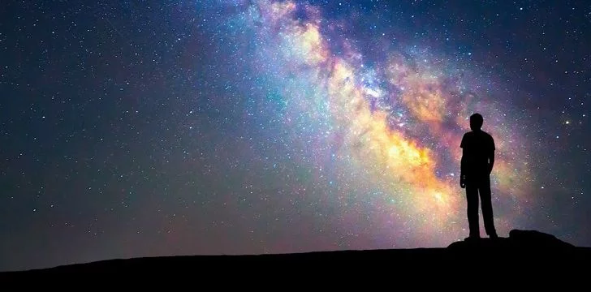It would take a modern spacecraft 450,000,000 years to travel to the center of our galaxy!
You can read more unbelievable space facts with this list of Milky Way facts!
The Sun weighs about 330,000 times more
than Earth.
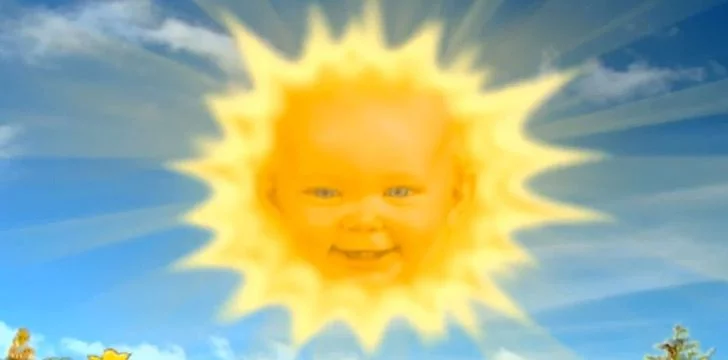
It is about 109 times the diameter of Earth and is so large the Earth could fit inside the sun
about
1,300,000
times over!
In fact, the sun is so gigantic that it contains 99.85% of all mass in our solar system.
Footprints left on the Moon won’t disappear as
there is no wind.
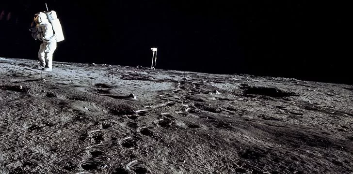
But wait a minute… if there’s no wind to blow them away then why is the flag blowing?
Well, it actually
wasn’t
blowing.
That rippling you see is because of a stubborn telescopic horizontal
rod that the astronauts were
struggling to
remove from the flag’s
upper hem.
Still unsure whether we’ve walked on the Moon? Here are 5 common Moon landing
myths debunked.
Because of lower gravity, a person who weighs 220
lbs on Earth would weigh 84 lbs on Mars.
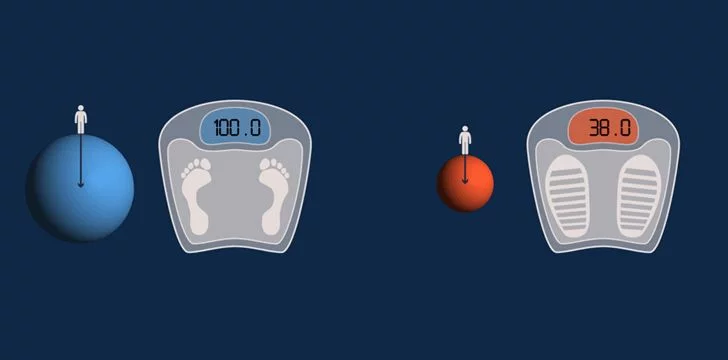
When sending droids to the surface of Mars, this is something scientists plan for, being
able to load the
droid
up with more equipment and build it from more robust materials.
There are 79 known moons orbiting Jupiter.
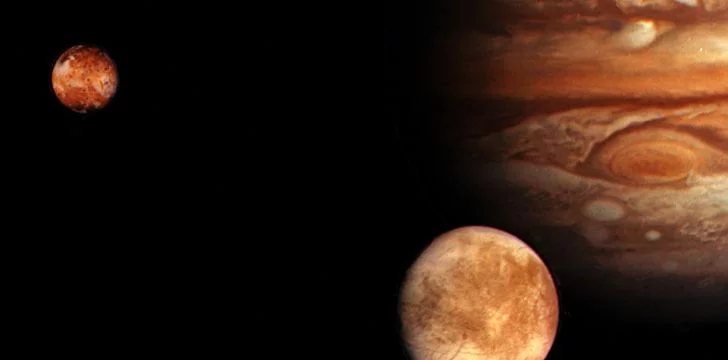
Jupiter is the planet in our solar system with the most moons, and it also has the largest
moon in our
solar
system.
That moon is called Ganymede and is 33,279 miles (5,262 km) in diameter – that’s bigger
than Mercury and it
is
visible with just a pair of binoculars!
The Martian day is 24 hours 39 minutes and 35
seconds long.
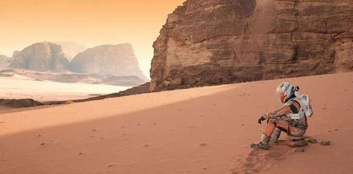
So you’d therefore assume there are less days in a year on Mars than Earth, right? Wrong!
Because Mars orbits the sun slower than the Earth, there are actually 687 Martian days
in a Martian year!
NASA’s Crater Observation and Sensing Satellite
(LCROSS) found evidence of water on
the Earth’s Moon.
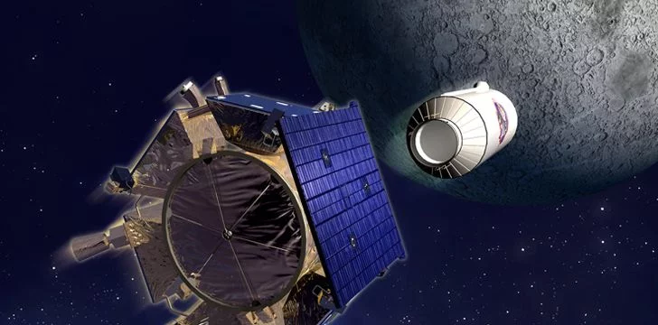
Whilst water cannot exist on the Moon’s surface under its current conditions,
scientists believe water ice
could
survive within the cold, permanently shadowed crates
at the Moon’s two poles.